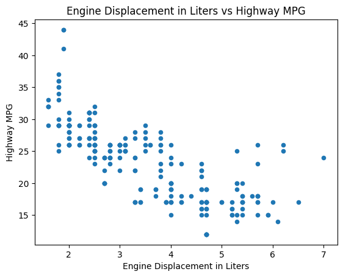
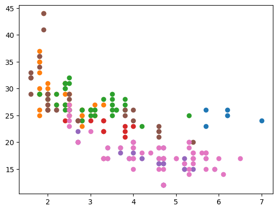

4.2 Comparing Plotting Libraries and Declarative Visualizations#
from plotnine import *
from matplotlib import pyplot as plt
from plotnine import data
import plotly.express as px
import seaborn as sns
mpg = data.mpg
Bar Chart#
mpg
| manufacturer | model | displ | year | cyl | trans | drv | cty | hwy | fl | class | |
|---|---|---|---|---|---|---|---|---|---|---|---|
| 0 | audi | a4 | 1.8 | 1999 | 4 | auto(l5) | f | 18 | 29 | p | compact |
| 1 | audi | a4 | 1.8 | 1999 | 4 | manual(m5) | f | 21 | 29 | p | compact |
| 2 | audi | a4 | 2.0 | 2008 | 4 | manual(m6) | f | 20 | 31 | p | compact |
| 3 | audi | a4 | 2.0 | 2008 | 4 | auto(av) | f | 21 | 30 | p | compact |
| 4 | audi | a4 | 2.8 | 1999 | 6 | auto(l5) | f | 16 | 26 | p | compact |
| ... | ... | ... | ... | ... | ... | ... | ... | ... | ... | ... | ... |
| 229 | volkswagen | passat | 2.0 | 2008 | 4 | auto(s6) | f | 19 | 28 | p | midsize |
| 230 | volkswagen | passat | 2.0 | 2008 | 4 | manual(m6) | f | 21 | 29 | p | midsize |
| 231 | volkswagen | passat | 2.8 | 1999 | 6 | auto(l5) | f | 16 | 26 | p | midsize |
| 232 | volkswagen | passat | 2.8 | 1999 | 6 | manual(m5) | f | 18 | 26 | p | midsize |
| 233 | volkswagen | passat | 3.6 | 2008 | 6 | auto(s6) | f | 17 | 26 | p | midsize |
234 rows × 11 columns
# Pandas
(mpg['manufacturer']
.value_counts(sort=False)
.plot.barh()
.set_title('Number of Cars by Make')
)
Text(0.5, 1.0, 'Number of Cars by Make')
# Plotnine (ggplot2 clone)
(ggplot(mpg) +
aes(x='manufacturer') +
geom_bar() +
coord_flip() +
ggtitle('Number of Cars by Make')
)
{kind=link}
fig = px.bar(
mpg.groupby('manufacturer', observed=False).size().reset_index(name='count'),
x='count',
y='manufacturer',
orientation='h',
title='Number of Cars by Make',
)
fig
Scatter Plot#
(mpg.
plot.
scatter(x='displ', y='hwy'))
<Axes: xlabel='displ', ylabel='hwy'>
mpg
| manufacturer | model | displ | year | cyl | trans | drv | cty | hwy | fl | class | |
|---|---|---|---|---|---|---|---|---|---|---|---|
| 0 | audi | a4 | 1.8 | 1999 | 4 | auto(l5) | f | 18 | 29 | p | compact |
| 1 | audi | a4 | 1.8 | 1999 | 4 | manual(m5) | f | 21 | 29 | p | compact |
| 2 | audi | a4 | 2.0 | 2008 | 4 | manual(m6) | f | 20 | 31 | p | compact |
| 3 | audi | a4 | 2.0 | 2008 | 4 | auto(av) | f | 21 | 30 | p | compact |
| 4 | audi | a4 | 2.8 | 1999 | 6 | auto(l5) | f | 16 | 26 | p | compact |
| ... | ... | ... | ... | ... | ... | ... | ... | ... | ... | ... | ... |
| 229 | volkswagen | passat | 2.0 | 2008 | 4 | auto(s6) | f | 19 | 28 | p | midsize |
| 230 | volkswagen | passat | 2.0 | 2008 | 4 | manual(m6) | f | 21 | 29 | p | midsize |
| 231 | volkswagen | passat | 2.8 | 1999 | 6 | auto(l5) | f | 16 | 26 | p | midsize |
| 232 | volkswagen | passat | 2.8 | 1999 | 6 | manual(m5) | f | 18 | 26 | p | midsize |
| 233 | volkswagen | passat | 3.6 | 2008 | 6 | auto(s6) | f | 17 | 26 | p | midsize |
234 rows × 11 columns
(mpg
.plot
.scatter(x='displ', y='hwy')
.set(title='Engine Displacement in Liters vs Highway MPG',
xlabel='Engine Displacement in Liters',
ylabel='Highway MPG'));

(ggplot(mpg) +
aes(x = 'displ', y = 'hwy') +
geom_point() +
ggtitle('Engine Displacement in Liters vs Highway MPG') +
xlab('Engine Displacement in Liters') +
ylab('Highway MPG')
)
{kind=link}
fig = px.scatter(
mpg,
x='displ',
y='hwy',
title='Engine Displacement in Liters vs Highway MPG',
labels={
'displ': 'Engine Displacement in Liters',
'hwy': 'Highway MPG'
}
)
fig.show()
Scatter Plot, Faceted with Color#
for c, df in mpg.groupby('class'):
plt.scatter(df['displ'], df['hwy'], label=c)

fig, ax = plt.subplots()
for c, df in mpg.groupby('class'):
plt.scatter(df['displ'], df['hwy'], label=c)
fig, ax = plt.subplots()
for c, df in mpg.groupby('class'):
ax.scatter(df['displ'], df['hwy'], label=c)
ax.legend()
ax.set_title('Engine Displacement in Liters vs Highway MPG')
ax.set_xlabel('Engine Displacement in Liters')
ax.set_ylabel('Highway MPG')
Text(0, 0.5, 'Highway MPG')
(sns
.FacetGrid(mpg, hue='class', height=5)
.map(plt.scatter, 'displ', 'hwy')
.add_legend()
.set(
title='Engine Displacement in Liters vs Highway MPG',
xlabel='Engine Displacement in Liters',
ylabel='Highway MPG'
))
<seaborn.axisgrid.FacetGrid at 0x16b31f230>
(ggplot(mpg) +
aes(x = 'displ', y = 'hwy', color = 'class') +
geom_point() +
ggtitle('Engine Displacement in Liters vs Highway MPG') +
xlab('Engine Displacement in Liters') +
ylab('Highway MPG'))
{kind=link}
fig = px.scatter(
mpg,
x='displ',
y='hwy',
color='class',
title='Engine Displacement in Liters vs Highway MPG',
labels={
'displ': 'Engine Displacement in Liters',
'hwy': 'Highway MPG',
'class': 'Vehicle Class'
}
)
fig.show()